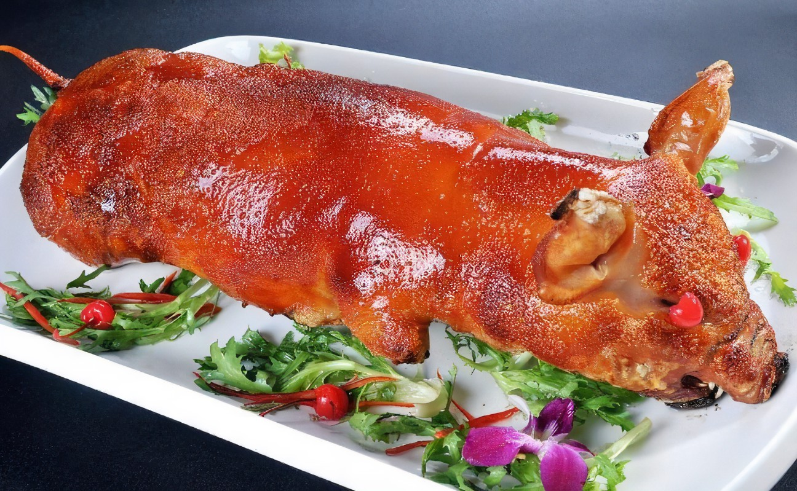
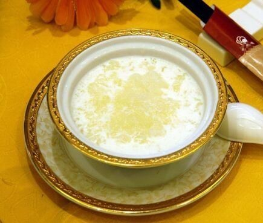

粤菜

蜜汁叉烧
蜜汁叉烧，是香港十大经典名菜之一，也是广东省传统名菜之一，属于粤菜系。“叉烧”是从“插烧”发展而来的。
主要以猪肉(瘦)、叉烧酱、蚝油、蒜、生抽、料酒、蜂蜜、白糖、花生油为原材料制作而成。 因一只猪，只有两条里脊，人们便想出插烧之法。久而久之插烧之名便被叉烧所替代。 具有补肾养血，滋阴润燥和有增加记忆力和健脑的功效。蜜汁叉烧是2018年9月10日发布的“中国菜”之一。
查看详情

烧乳猪
早在西周时代已列为“八珍”之一，那时称为“炮豚”，即烤乳猪。在《齐民要术》一书中也记有烤乳猪的制作方法，并说它“色同琥珀，又类真金，入口则消，壮若凌雪，含浆膏润，特异凡常也”。清康熙时，曾为宫廷名菜，成为“满汉全席”中的一道主要菜肴。直到民国初期山东还经营此菜。后在广州和上海盛行，成为最著名的广东名菜。现今“烧乳猪”为广州和港澳地区许多著名菜馆的首席名菜，深受中外顾客欢迎。
查看详情
